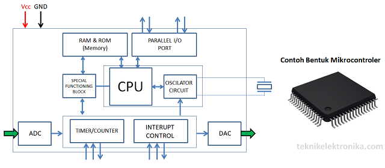

Pengertian Mikrokontroler (Microcontroller) dan Strukturnya.
We are a interior design service that focus on what's best for your home and what's best for you!
Pengertian Mikrokontroler (MicroController) dan Strukturnya – Mikrokontroler adalah sebuah komputer kecil yang dikemas dalam bentuk chip IC (Integrated Circuit) dan dirancang untuk melakukan tugas atau operasi tertentu. Pada dasarnya, sebuah IC Mikrokontroler terdiri dari satu atau lebih Inti Prosesor (CPU), Memori (RAM dan ROM) serta perangkat INPUT dan OUTPUT yang dapat diprogram.
Dalam pengaplikasiannya, Pengendali Mikro yang dalam bahasa Inggris disebut dengan Microcontroller ini digunakan dalam produk ataupun perangkat yang dikendalikan secara otomatis seperti sistem kontrol mesin mobil, perangkat medis, pengendali jarak jauh, mesin, peralatan listrik, mainan dan perangkat-perangkat yang menggunakan sistem tertanam lainnya.
Penggunaan Mikrokontroler ini semakin populer karena kemampuannya yang dapat mengurangi ukuran dan biaya pada suatu produk atau desain apabila dibandingkan dengan desain yang dibangun dengan menggunakan mikroprosesor dengan memori dan perangkat input dan output secara terpisah.
Diagram Blok dan Struktur Mikrokontroler
Berikut ini adalah Diagram Blok dan Struktur Mikrokontroler beserta penjelasan singkat tentang bagian-bagian utamanya.
1. CPU
CPU adalah otak mikrokontroler. CPU bertanggung jawab untuk mengambil instruksi (fetch), menerjemahkannya (decode), lalu akhirnya dieksekusi (execute). CPU menghubungkan setiap bagian dari mikrokontroler ke dalam satu sistem. Fungsi utama CPU adalah mengambil dan mendekode instruksi. Instruksi yang diambil dari memori program harus diterjemahkan atau melakukan decode oleh CPU tersebut.
2. Memori (Penyimpanan)
Fungsi memori dalam mikrokontroler sama dengan mikroprosesor. Memori Ini digunakan untuk menyimpan data dan program. Sebuah mikrokontroler biasanya memiliki sejumlah RAM dan ROM (EEPROM, EPROM dan lain-lainnya) atau memori flash untuk menyimpan kode sumber program (source code program).
3. Port INPUT / OUTPUT paralel
Port Input / Output paralel digunakan untuk mendorong atau menghubungkan berbagai perangkat seperti LCD, LED, printer, memori dan perangkat INPUT/OUTPUT lainnya ke mikrokontroler.
4. Port Serial (Serial Port)
Port serial menyediakan berbagai antarmuka serial antara mikrokontroler dan periferal lain seperti port paralel.
5. Pengatur Waktu dan Penghitung (Timer and Counter)
Timer dan Counter adalah salah satu fungsi yang sangat berguna dari Mikrokontroler. Mikrokontroler mungkin memiliki lebih dari satu timer dan counter. Pengatur waktu (Timer) dan Penghitung (Counter) menyediakan semua fungsi pengaturean waktu dan penghitungan di dalam mikrokontroler. Operasi utama yang dilakukan di bagian ini adalah fungsi jam, modulasi, pembangkitan pulsa, pengukuran frekuensi, osilasi, dan lain sebagainya. Bagian ini juga dapat digunakan untuk menghitung pulsa eksternal.
6. Analog to Digital Converter atau Pengonversi Analog ke Digital (ADC)
Konverter ADC digunakan untuk mengubah sinyal analog ke bentuk digital. Sinyal input dalam konverter ini harus dalam bentuk analog (misalnya Output dari Sensor) sedangkan Outputnya dalam bentuk digital. Output digital dapat digunakan untuk berbagai aplikasi digital seperti layar digital pada Perangkat pengukuran.
7. Digital to Analog Converter atau Pengonversi Digital ke Analog (DAC)
DAC melakukan operasi pembalikan konversi ADC. DAC mengubah sinyal digital menjadi format analog. Ini biasanya digunakan untuk mengendalikan perangkat analog seperti motor DC dan lain sebagainya.
8. Kontrol Interupsi (Interrupt Control)
Kontrol interupsi atau Interrupt Control digunakan untuk menyediakan interupsi (penundaan) untuk program kerja. Interrupt dapat berupa eksternal (diaktifkan dengan menggunakan pin interrupt) atau internal (dengan menggunakan instruksi interupsi selama pemrograman).
9. Blok Fungsi Khusus (Special Functioning Block)
Beberapa Mikrokontroler yang hanya dapat digunakan untuk beberapa aplikasi khusus (misalnya sistem Robotik), pengontrol ini memiliki beberapa port tambahan untuk melakukan operasi khusus tersebut yang umumnya dinamakan dengan Blok Fungsi Khusus.
Keunggulan dan Kelemahan Mikrokontroler
Keunggulan atau Kelebihan utama dari mikrokontroler :
- Mikrokontroler bertindak sebagai mikrokomputer tanpa harus ada komponen digital tambahan lainnya
- Dapat mengurangi biaya dan ukuran sistem karena integrasi yang lengkap dalam sebuah mikrokontroler.
- Penggunaan mikrokontroler sederhana dan mudah untuk memecahkan masalah dan pemeliharaan sistem.
- Sebagian besar pin dapat diprogram oleh pengguna untuk melakukan berbagai fungsi.
- Mudah menghubungkan port RAM, ROM dan I / O tambahan.
- Waktu yang diperlukan untuk melakukan operasi rendah.
Kekurangan dari Mikrokontroler:
- Mikrokontroler memiliki arsitektur yang lebih kompleks daripada mikroprosesor.
- Hanya melakukan eksekusi dalam jumlah terbatas dalam waktu yang bersamaan.
- Kebanyakan hanya digunakan dalam peralatan-peralatan mikro.
- Tidak dapat terhubung dengan perangkat yang berdaya tinggi secara langsung.
Sumber : teknikelektronika.com